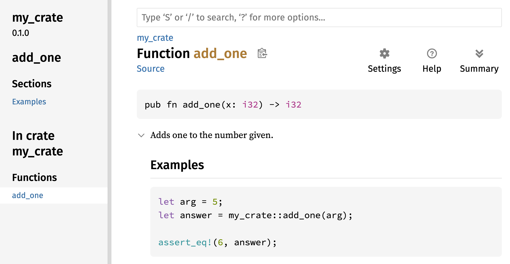
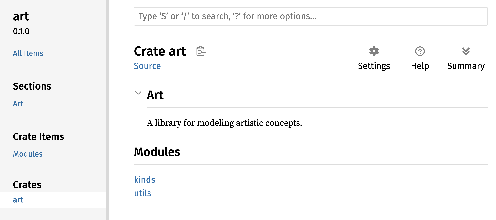

将Crate发布到Crates.io
我们使用了 [crates.io]（https://crates.io/） 的包作为项目的依赖，但你也可以通过发布自己的包与他人分享代码。[crates.io]（https://crates.io/）的箱子注册表分发包的源代码，所以它主要托管开源代码。
Rust和Cargo具有使人们更容易找到和使用您已发布的软件包的功能。 我们将在下面谈到其中一些功能，然后解释如何发布一个包。
编写有用的文档注释
准确记录你的软件包的内容，可以帮助其他用户了解如何以及何时使用它们。因此，花时间编写文档是值得的。在第三章中，我们讨论了如何使用两个斜杠 // 来注释 Rust 代码。Rust 还有一种专门用于文档注释的注释类型，通常被称为“文档注释_”，这种注释会生成 HTML 文档。HTML 会显示那些用于公开 API 的文档注释的内容，这些 API 的目的是让程序员能够了解如何“使用”你的软件包，而不是了解你的软件包是如何“实现”的。
文档注释使用三个斜杠，即 ///，而不是两个斜杠。同时，文档注释还支持 Markdown 格式标记来格式化文本。将文档注释放在它们所注释的项目之前即可。列表 14-1 展示了名为 my_crate 的包中一个 add_one 函数的文档注释示例。
/// Adds one to the number given.
///
/// # Examples
///
/// ```
/// let arg = 5;
/// let answer = my_crate::add_one(arg);
///
/// assert_eq!(6, answer);
/// ```
pub fn add_one(x: i32) -> i32 {
x + 1
}在这里，我们描述了 add_one 函数的功能，接着以 Examples 作为标题开始一个新章节，然后提供了如何使用 add_one 函数的代码示例。我们可以通过运行 cargo doc 来生成HTML文档。这个命令会调用随Rust一起提供的rustdoc工具，并将生成的HTML文档存放在 target/doc 目录下。
为了方便起见，运行 cargo doc --open 将会生成当前 crate 的文档内容（以及所有依赖项的文档内容），并将结果在网页浏览器中打开。访问add_one函数，您可以看到文档注释中的文本是如何被渲染的，如图14-1所示。

图 14-1：’add_one’函数的 HTML 文档
常用章节
我们在 Listing 14-1 中使用了 # Examples Markdown 标题来创建一个名为“示例”的章节。以下是 crate 作者在其文档中常用的其他章节类型：
- ** panic 情况**：这些是指被记录的函数可能会陷入 panic 的情况。那些不希望自己的程序陷入 panic 的调用者，应该确保在这种情况下不要调用该函数。
- 错误：如果该函数返回
Result，那么描述可能发生的错误类型以及可能导致这些错误的情况，对于调用者来说非常有帮助，这样他们就可以编写代码来应对不同类型的错误。 - 安全性：如果该函数被安全地调用（我们在第20章中讨论了不安全性），那么应该有一个部分来解释为什么该函数是不安全的，并说明该函数期望调用者遵守哪些不变条件。
大多数文档注释并不需要所有这些部分，但这是一个很好的清单，可以提醒你用户感兴趣了解的代码相关方面。
文档注释作为测试
在文档注释中添加示例代码块可以帮助演示如何使用你的库，并且还有一个额外的好处：运行 cargo test 将会使文档中的代码示例作为测试运行！没有什么比带有示例的文档更好的了。但是，如果示例因为代码在编写文档后发生了变化而无法正常运行，那可就糟糕了。如果我们使用 Listing 14-1 中的 add_one 函数的文档来运行 cargo test，我们会看到测试结果中有一个这样的部分：
Doc-tests my_crate
running 1 test
test src/lib.rs - add_one (line 5) ... ok
test result: ok. 1 passed; 0 failed; 0 ignored; 0 measured; 0 filtered out; finished in 0.27s
现在，如果我们修改函数或示例，使得在示例中出现的 assert_eq! 引发异常，然后再次运行 cargo test，我们会发现文档测试会捕获到示例和代码之间出现了不一致的问题！
包含的项目注释
这种文档注释的风格 //! 是将注释附加到包含这些注释的项目上，而不是附加在注释之后的项目上。我们通常将这些文档注释放在 crate 的根文件（按照惯例是 src/lib.rs）中，或者放在某个模块中，以对整个 crate 或模块进行说明。
例如，为了添加描述 my_crate 这个 crate 的功能的文档，我们需要在 src/lib.rs 文件的开头添加以 //! 开头的文档注释，如清单 14-2 所示。
//! # My Crate
//!
//! `my_crate` is a collection of utilities to make performing certain
//! calculations more convenient.
/// Adds one to the number given.
// --snip--
///
/// # Examples
///
/// ```
/// let arg = 5;
/// let answer = my_crate::add_one(arg);
///
/// assert_eq!(6, answer);
/// ```
pub fn add_one(x: i32) -> i32 {
x + 1
}my_crate crate as a whole请注意，最后一行之后没有任何以 //! 开头的代码。因为我们是以 //! 开始注释的，而不是 ///。因此，我们记录的是包含这条注释的项目，而不是紧随这条注释之后的项目。在这种情况下，该项目就是 src/lib.rs 文件，也就是 crate 的根目录。这些注释描述了整个 crate 的内容。
当我们运行 cargo doc --open 时，这些注释将会显示在文档的首页上，位于 crate 中公共项目的列表上方，如图 14-2 所示。
在项目中的文档注释非常有用，尤其适用于描述 crate 和 module。使用这些注释来解释容器的整体目的，以帮助用户理解该 crate 的组织结构。

图14-2： my_crate 的渲染文档，其中包括对该包整体描述的注释
导出便捷的公共 API
在发布一个crate时，你的公共API的结构是一个重要的考虑因素。使用你的crate的人可能比你更不了解该API的结构，如果crate的模块层次结构过于复杂，他们可能会难以找到他们想要使用的部分。
在第七章中，我们介绍了如何使用 pub 关键字将项设为公开，以及如何使用 use 关键字将项引入某个作用域。然而，在开发 crate 时你觉得合适的结构，可能对你的用户来说并不方便。你可能希望将结构体按照多层层次结构来组织，但那些需要在层次结构深处使用你定义的类型的人可能会遇到难以找到该类型的问题。他们还可能因为需要输入 use my_crate::some_module::another_module::UsefulType; 而不是 use my_crate::UsefulType; 而感到烦恼。
好消息是，如果某个结构让其他用户难以使用，或者无法从其他库中使用，那么您不必重新调整内部组织结构。相反，您可以使用 pub use 将某些元素重新导出，从而创建一个与您的私有结构不同的公共结构。_重新导出_操作是将某个公共元素从一个位置导出到另一个位置，就好像该元素是在另一个位置定义的那样。
例如，我们假设创建了一个名为 art 的库，用于建模艺术概念。在这个库中，有两个模块：一个 kinds 模块，其中包含两个枚举类型，分别命名为 PrimaryColor 和 SecondaryColor；另一个 utils 模块中包含一个名为 mix 的函数，如清单 14-3 所示。
//! # Art
//!
//! A library for modeling artistic concepts.
pub mod kinds {
/// 原色是根据 RYB 颜色模型来划分
pub enum PrimaryColor {
Red,
Yellow,
Blue,
}
/// 基于 RYB 颜色模型的次要颜色。
pub enum SecondaryColor {
Orange,
Green,
Purple,
}
}
pub mod utils {
use crate::kinds::*;
/// 混合两种主要颜色的数量相等以创建
//// 一种次要颜色。
pub fn mix(c1: PrimaryColor, c2: PrimaryColor) -> SecondaryColor {
// --snip--
——剪——
unimplemented!();
}
}art library with items organized into kinds and utils modules图14-3展示了 cargo doc 这个 crate 的文档首页的样式。

图14-3： art 文档的首页，其中列出了 kinds 和 utils 模块
请注意，PrimaryColor和SecondaryColor这两种类型并没有出现在主页上，同样，mix这个函数也没有被列出。我们必须点击kinds和utils才能看到它们。
另一个依赖此库的 crate 需要使用 use 语句，将 art 中的项引入作用域，并指定当前定义的模块结构。列表 14-4 展示了一个使用 art 库中的 PrimaryColor 和 mix 项的 crate 示例。
use art::kinds::PrimaryColor;
use art::utils::mix;
fn main() {
let red = PrimaryColor::Red;
let yellow = PrimaryColor::Yellow;
mix(red, yellow);
}art crate’s items with its internal structure exported清单14-4中的代码作者使用了 art 这个 crate，他需要弄清楚 PrimaryColor 位于 kinds 模块中，而 mix 则位于 utils 模块中。 art crate 的模块结构对于使用 art crate 的开发者来说更为重要，而不是那些正在使用 art crate 的人。该模块结构并不包含任何有助于理解如何使用 art crate 的信息，反而会因为开发者需要自行确定查找位置，并且必须在 use 语句中指定模块名称而引发混乱。
为了从公共 API 中移除内部组织结构，我们可以修改清单 14-3 中的art crate 代码，添加 pub use 语句，以重新导出顶层级别的 items，如清单 14-5 所示。
//! # Art
//!
//! A library for modeling artistic concepts.
pub use self::kinds::PrimaryColor;
pub use self::kinds::SecondaryColor;
pub use self::utils::mix;
pub mod kinds {
// --snip--
——剪——
/// 原色是根据 RYB 颜色模型来划分
pub enum PrimaryColor {
Red,
Yellow,
Blue,
}
/// 基于 RYB 颜色模型的次要颜色。
pub enum SecondaryColor {
Orange,
Green,
Purple,
}
}
pub mod utils {
// --snip--
——剪——
use crate::kinds::*;
/// 混合两种主要颜色，数量相等以创建
/// 次要颜色。
pub fn mix(c1: PrimaryColor, c2: PrimaryColor) -> SecondaryColor {
SecondaryColor::Orange
}
}pub use statements to re-export itemscargo doc 为这个 crate 生成的 API 文档现在会在首页上列出并链接到各种重新导出内容，如图 14-4 所示。这样一来，PrimaryColor、SecondaryColor 类型以及 mix 函数就更容易被找到了。

图14-4： art 文档的首页，其中列出了重新导出内容
art crate 的用户仍然可以像 Listing 14-4 中所示那样查看和使用 Listing 14-3 中的内部结构，或者他们可以使用 Listing 14-5 中更便捷的结构，如 Listing 14-6 所示。
use art::PrimaryColor;
use art::mix;
fn main() {
// --snip--
——剪——
let red = PrimaryColor::Red;
let yellow = PrimaryColor::Yellow;
mix(red, yellow);
}art crateIn cases where there are many nested modules, re-exporting the types at the top level with pub use can make a significant difference in the experience of people who use the crate. Another common use of pub use is to re-export definitions of a dependency in the current crate to make that crate’s definitions part of your crate’s public API.
创建有用的公共API结构更像是一门艺术而非科学，你可以不断尝试以找到最适合用户的API。选择 pub use 可以让你在内部构建你的软件包时拥有更大的灵活性，并将这种内部结构与用户所看到的界面分离开来。你可以查看一些你已经安装过的软件包的代码，看看它们的内部结构是否与公共API有所不同。
创建 Crates.io 账户
在您能够发布任何 crate 之前，您需要先在crates.io上创建一个账户，并获取一个 API 令牌。为此，请访问crates.io的主页，并通过 GitHub 账户登录。（目前需要使用 GitHub 账户登录，但未来该网站可能会支持其他方式的账户创建方式。）登录后，请访问https://crates.io/me/设置页面，获取您的 API 密钥。然后，运行 cargo login 命令，并在提示时粘贴您的 API 密钥。
$ cargo login
abcdefghijklmnopqrstuvwxyz012345
此命令会将您的API令牌告知Cargo，并将其本地存储在_~/.cargo/credentials.toml_文件中。请注意，此令牌属于机密信息：切勿与任何人分享。如果您出于任何原因需要与他人共享该令牌，请立即撤销其权限，并在crates.io上生成新的令牌。
为新的 crate 添加元数据
假设你有一个想要发布的 crate。在发布之前，你需要在 crate 的 Cargo.toml 文件的 [package] 部分中添加一些元数据。
你的 crate 需要一个独特的名称。在本地开发 crate 时，你可以随意为其命名。不过，crates.io上的 crate 名称是按照先来先服务的原则进行分配的。一旦某个名称被占用，其他人就无法再使用该名称发布 crate 了。在尝试发布 crate 之前，请先搜索你想使用的名称。如果该名称已被占用，你需要另选一个名称，并编辑 Cargo.toml 文件中的 [package] 部分的 name 字段，以便使用新的名称进行发布。
文件名：Cargo.toml
[package]
name = "guessing_game"
即使你选择了一个独特的名称，在运行 cargo publish 来发布这个软件包时，你会先收到一个警告，然后会遇到一个错误：
$ cargo publish
Updating crates.io index
warning: manifest has no description, license, license-file, documentation, homepage or repository.
See https://doc.rust-lang.org/cargo/reference/manifest.html#package-metadata for more info.
--snip--
error: failed to publish to registry at https://crates.io
Caused by:
the remote server responded with an error (status 400 Bad Request): missing or empty metadata fields: description, license. Please see https://doc.rust-lang.org/cargo/reference/manifest.html for more information on configuring these fields
This results in an error because you’re missing some crucial information: A description and license are required so that people will know what your crate does and under what terms they can use it. In Cargo.toml, add a description that’s just a sentence or two, because it will appear with your crate in search results. For the license field, you need to give a license identifier value. The Linux Foundation’s Software Package Data Exchange (SPDX) lists the identifiers you can use for this value. For example, to specify that you’ve licensed your crate using the MIT License, add the MIT identifier:
文件名：Cargo.toml
[package]
name = "guessing_game"
license = "MIT"
如果您想使用在 SPDX 中未出现的许可证，您需要将该许可证的文本放在一个文件中，并将该文件包含到您的项目中。然后，可以使用 license-file 来指定该文件的名称，而不是使用license键。
关于哪种许可证适合您的项目，这方面的指导超出了本书的范围。Rust社区中的许多人都采用与Rust相同的许可证方式，即使用 MIT OR Apache-2.0 双重许可证。这种做法表明，您也可以使用 OR 来指定多个许可证标识符，从而为您的项目使用多个许可证。
一个具有独特名称的版本文件，加上你的描述以及许可证信息后，一个准备发布的项目的_Cargo.toml_文件可能如下所示：
文件名：Cargo.toml
[package]
name = "guessing_game"
version = "0.1.0"
edition = "2024"
description = "A fun game where you guess what number the computer has chosen."
license = "MIT OR Apache-2.0"
[dependencies]
Cargo的文档中描述了其他可以指定的元数据，这些元数据有助于他人更轻松地发现和使用你的库。
发布到Crates.io
现在你已经创建了一个账户，保存了你的API令牌，为你的包选择了名称，并指定了所需的元数据，那么你就已经准备好发布你的包了！发布包会将特定版本的文件上传到crates.io供其他人使用。
请注意，发布的版本是永久性的。该版本无法被覆盖，除非在某些特定情况下，否则代码也无法被删除。Crates.io的主要目标之一就是作为代码的永久存储库，这样所有依赖crates.io上的crates的项目都能继续正常运行。如果允许删除版本，那么实现这一目标就会变得不可能。不过，您可以发布任意数量的crates版本。
再次运行 cargo publish 命令。现在应该可以成功执行了：
$ cargo publish
Updating crates.io index
Packaging guessing_game v0.1.0 (file:///projects/guessing_game)
Packaged 6 files, 1.2KiB (895.0B compressed)
Verifying guessing_game v0.1.0 (file:///projects/guessing_game)
Compiling guessing_game v0.1.0
(file:///projects/guessing_game/target/package/guessing_game-0.1.0)
Finished `dev` profile [unoptimized + debuginfo] target(s) in 0.19s
Uploading guessing_game v0.1.0 (file:///projects/guessing_game)
Uploaded guessing_game v0.1.0 to registry `crates-io`
note: waiting for `guessing_game v0.1.0` to be available at registry
`crates-io`.
You may press ctrl-c to skip waiting; the crate should be available shortly.
Published guessing_game v0.1.0 at registry `crates-io`
恭喜！你现在已经将你的代码分享给了Rust社区，任何人都可以轻松地将你的库作为依赖项添加到他们的项目中。
发布现有 crate 的新版本
当你对你的项目进行了修改，并且准备发布一个新版本时，你需要修改 Cargo.toml 文件中指定的 version 值，然后重新发布。使用 语义版本控制规则 来决定基于你所做的修改，合适的下一个版本号是什么。之后，运行 cargo publish 来上传新版本。
从Crates.io中移除不再使用的版本
虽然无法删除某个包的先前版本，但可以阻止未来的项目将其作为新的依赖项添加。当某个包的版本因某种原因出现问题时，这一点非常有用。在这种情况下，Cargo支持将某个包的版本进行迁移。
版本拉取可以阻止新项目依赖该版本，同时允许所有依赖该版本的现有项目继续运行。本质上，版本拉取意味着所有包含_Cargo.lock_文件的项目都不会受到影响，而未来生成的_Cargo.lock_文件将不会使用拉取到的版本。
要在之前已发布的 crate 的目录中下载某个版本，请在项目目录中运行 cargo yank，并指定想要下载的版本。例如，如果我们发布了一个名为 guessing_game 的 crate，其版本为 1.0.1，并且我们想要下载该版本，那么我们需要在项目目录中运行以下命令来获取 guessing_game 版本：
$ cargo yank --vers 1.0.1
Updating crates.io index
Yank guessing_game@1.0.1
通过在命令中添加 --undo，你还可以撤销一次复制操作，并允许项目根据版本的不同而重新开始：
$ cargo yank --vers 1.0.1 --undo
Updating crates.io index
Unyank guessing_game@1.0.1
yank_do_not_删除任何代码。例如，它不能删除意外上传的秘密。如果发生这种情况，您必须立即重置这些秘密。